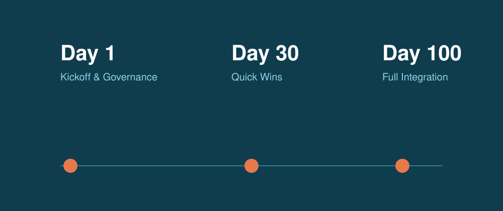

PMI成功率を左右する「最初の100日」— 統合マスタープランの設計原則

M&Aの成否はディールの成立ではなく統合の巧拙で決まる。統合初期に何を意思決定し、どの順序で着手すべきか。PMOの立ち上げからガバナンス設計、クイックウィンの見極めまでを体系化する。
read more
M&Aの成否はディールの成立ではなく統合の巧拙で決まる。統合初期に何を意思決定し、どの順序で着手すべきか。PMOの立ち上げからガバナンス設計、クイックウィンの見極めまでを体系化する。
read more
「シナジー100億円」という数字はどこから来て、どこで消えるのか。コストシナジーとレベニューシナジーを別々のロジックで管理し、トラッキング可能なKPIに落とし込む実務手法を解説する。
read more
言語・意思決定様式・評価制度の違いは、統合後の離職と生産性低下に直結する。国内製造業が北米企業を買収したケースを題材に、文化デューデリジェンスと統合設計の勘所を振り返る。
read more